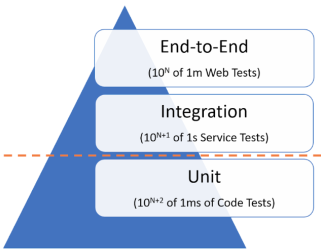

# Automated Testing Learn about the various kinds of automated tests and write some in JavaScript and PHP. This material is part of [web development courses](https://github.com/MediaComem/comem-webdev) for [Media Engineering](https://heig-vd.ch/formations/bachelor/filieres/ingenierie-des-medias). **You will need** * A Unix CLI * A code editor (like [Visual Studio Code][vscode]) * [Node.js][node] 10.x and [PHP][php] 5+ installed * Basic knowledge of JavaScript and PHP **Recommended reading** * [Continuous Software Development](../continuous/) <!-- START doctoc --> <!-- END doctoc --> --- class: center, middle ## What is automated testing? .breadcrumbs[<a href="#1">Automated Testing</a>] <p class='center'><img class='w60' src='images/automated-tests.png' /></p> --- ### Manual testing .breadcrumbs[<a href="#1">Automated Testing</a> > <a href="#2">What is automated testing?</a>] When writing or modifying software, especially large software, you must regularly **test** it to make sure it works. **Manual testing** is basically testing the software yourself, whether it's a desktop or mobile application, or a website. You'll browse through the pages or screens, fill and submit forms, trigger actions, etc. In a large company, this might be handled by specialized [Quality Assurance (QA)][qa] engineers. Whether you or a QA engineer is doing it, manual testing has certain disadvantages: * It is **time-consuming**. Testing a large software application manually can take hours or even days. You might skip some tests to save time, allowing bugs to stay hidden. * It is **boring** and **repetitive**. This makes it more likely that you will make a mistake while testing and miss a bug. --- ### Automated testing .breadcrumbs[<a href="#1">Automated Testing</a> > <a href="#2">What is automated testing?</a>] Running functions, making HTTP calls or clicking on specific buttons does not have to be done by a human being. A program can do it just as well. [Test automation][automated-tests] is the use of special **testing software**: * The test software is **separate from the software being tested**. * It **executes tests automatically** instead of manually. * It compares **actual outcomes** (what actually happens) versus **expected** outcomes (what you expected to happen when writing the test). Note that **automated tests are not a replacement for automated tests**. They are complementary in that they can be used to accelerate or automate tests that can be run by a machine instead of a human. --- ### Test frameworks .breadcrumbs[<a href="#1">Automated Testing</a> > <a href="#2">What is automated testing?</a>] There are many test frameworks written in various languages. These are all **test runners**, i.e. they can be used to write and execute tests: Frameworks | Tests written in :--- | :--- [Mocha][mocha], [Jasmine][jasmine], [Jest][jest], [SuperTest][supertest], [Tape][tape] | [JavaScript][js] [JUnit][junit], [JMeter][jmeter], [Robotium][robotium] | [Java][java] [PHPUnit][phpunit] | [PHP][php] [RSpec][rspec], [test-unit][ruby-test-unit] | [Ruby][ruby] [doctest][doctest], [unittest][python-unittest] | [Python][python] [Apium][appium], [Cucumber][cucumber], [Selenium WebDriver][selenium-webdriver] | *Various languages* --- #### Which test framework should I use? .breadcrumbs[<a href="#1">Automated Testing</a> > <a href="#2">What is automated testing?</a> > <a href="#5">Test frameworks</a>] It depends on what kind of test you want to write. If you want to test an individual PHP function, for example, you must use a test framework written in the same language, such as [PHPUnit][phpunit]. However, if you want to test an API or drive a mobile application or website, it does not matter in which language the test framework is written, as long as it can make the required HTTP calls or click on the correct buttons. For example: * [SuperTest][supertest] is a JavaScript tool to test APIs. It could be used to test an API implemented in PHP with Laravel, or with any other language or framework. * [Selenium WebDriver][selenium-webdriver] is a tool to automate browser tests. It can test any web application or site, regardless of the language or framework used to implement that application or site. --- ### Types of automated tests .breadcrumbs[<a href="#1">Automated Testing</a> > <a href="#2">What is automated testing?</a>] There are various types of automated tests, and some of these types overlap. Not everybody agrees how they should be called: .grid-33[ <img class='w100' src='images/pyramid-1.png' /> ] .grid-33[  ] .grid-33[ ] --- ### Yet another classification .breadcrumbs[<a href="#1">Automated Testing</a> > <a href="#2">What is automated testing?</a>] This is how we will separate the 3 main types of tests in this guide: Type | What is tested | Properties :--- | :--- | :--- [Unit tests][unit-testing] | Things in isolation | Fastest, easiest to maintain [Integration tests][integration-testing] | Things together | End-to-end tests | Whole system from the user's perspective | Slower, harder to maintain There are also other specialized types of tests which we will not focus on, like [performance tests][performance-testing], which can be used to test the response time or scalability of software or infrastructure. --- class: center, middle ## Unit tests .breadcrumbs[<a href="#1">Automated Testing</a>] <p class='center'><img class='w80' src='images/unit-tests.png' /></p> --- ## What is a unit test? .breadcrumbs[<a href="#1">Automated Testing</a>] The goal of [unit testing][unit-testing] is to test **individual units of source code in isolation**. You can view a **unit** as the **smallest testable part of your software**. For example, you might test an individual JavaScript function: ```js function add(a, b) { return a + b; } ``` --- ### How to write a unit test .breadcrumbs[<a href="#1">Automated Testing</a> > <a href="#10">What is a unit test?</a>] When writing a unit test for a piece of code, you want to identify the **inputs** and **outputs** (or side effects) of that code. ```js function add(a, b) { return a + b; } ``` In this case: * There are two numbers as inputs, `a` and `b`. * There is one number as output. --- ### Assertions .breadcrumbs[<a href="#1">Automated Testing</a> > <a href="#10">What is a unit test?</a>] Once you have the inputs and outputs, you want to define **assertions** on how that code should behave. ```js function add(a, b) { return a + b; } ``` Assertions are the outputs you expect for specific inputs. For example: * For inputs 2 and 3, the **expected** output is 5. * For inputs -3 and 4, the **expected** output is 1. * For inputs 10 and -12, the **expected** output is -2. When implementing unit tests, you will execute the code and use assertions to compare the **actual** output value with the **expected** one. --- ### Write PHP unit tests .breadcrumbs[<a href="#1">Automated Testing</a> > <a href="#10">What is a unit test?</a>] You'll work with this [sample PHP project][php-sample] for your first unit tests. It is a simple command line script to print statistics on a file's contents. Follow the usage instructions in the README to make sure you can execute the script locally. The output should look something like this: ```bash $> `php file-stats.php data/rainbow.txt` File: /path/to/data/rainbow.txt Lines: 51 Words: 255 Characters: 1284 Size: 1.25KB ``` --- #### Install a PHP test runner .breadcrumbs[<a href="#1">Automated Testing</a> > <a href="#10">What is a unit test?</a> > <a href="#13">Write PHP unit tests</a>] To execute our future PHP unit tests, we'll need a test framework, including a **test runner**. The most popular one for PHP is [PHPUnit][phpunit]. To install PHPUnit, you will first need to install [Composer][composer], the dependency manager for PHP. It can install packages created by the PHP community, including PHPUnit. > You can install Composer in a directory by simply downloading it, > in which case you must run it with `php composer.phar [args...]`. > Or you can install it globally, in which case you can simply run it with `composer [args...]`. > These installation methods are described in the documentation. --- #### Install PHPUnit .breadcrumbs[<a href="#1">Automated Testing</a> > <a href="#10">What is a unit test?</a> > <a href="#13">Write PHP unit tests</a>] Once you have Composer installed, you can install PHPUnit with it. Run this command in the `comem-archidep-php-automated-tests` directory: ```bash $> `composer require --dev phpunit/phpunit '^7'` ./composer.json has been updated Loading composer repositories with package information Updating dependencies (including require-dev) Package operations: 28 installs, 0 updates, 0 removals ... - Installing phpunit/phpunit (7.5.2): Loading from cache ... Generating autoload files ``` If you have successfully installed it, you should be able to check its version: ```bash $> `./vendor/bin/phpunit --version` PHPUnit 7.0.0 by Sebastian Bergmann and contributors. ``` --- #### Create a test file .breadcrumbs[<a href="#1">Automated Testing</a> > <a href="#10">What is a unit test?</a> > <a href="#13">Write PHP unit tests</a>] You will now create your first test file. Create a `tests` directory and save the following contents to `tests/file-stats.php`: ```php <?php declare(strict_types=1); use PHPUnit\Framework\TestCase; require(dirname(__FILE__) . '/../src/functions.php'); use function FileStats\countBytes; use function FileStats\countCharacters; use function FileStats\countLines; use function FileStats\countWords; use function FileStats\formatBytes; final class FileStatsTest extends TestCase { public function testSomething(): void { } } ?> ``` --- #### Anatomy of a PHPUnit test case .breadcrumbs[<a href="#1">Automated Testing</a> > <a href="#10">What is a unit test?</a> > <a href="#13">Write PHP unit tests</a>] What you just pasted is a PHPUnit **test suite** composed of one **test case**: * It inherits from the `PHPUnit\Framework\TestCase` class. * It has methods with names that begin with `test`. Those are what PHPUnit will execute when running the file. <p class='center'></p> --- #### Run your first test .breadcrumbs[<a href="#1">Automated Testing</a> > <a href="#10">What is a unit test?</a> > <a href="#13">Write PHP unit tests</a>] You can run all the test cases in a file with this command: ```bash $> `./vendor/bin/phpunit --bootstrap vendor/autoload.php tests/file-stats.php` PHPUnit 7.5.2 by Sebastian Bergmann and contributors. R 1 / 1 (100%) Time: 29 ms, Memory: 4.00MB There was 1 risky test: 1) FileStatsTest::testSomething This test did not perform any assertions /path/to/projects/comem-archidep-php-automated-tests/tests/file-stats.php:12 OK, but incomplete, skipped, or risky tests! Tests: 1, Assertions: 0, Risky: 1. ``` As you can see, the `testSomething` method was executed, but the test runner is warning us that it **did not perform any assertions**. A test that performs no assertions is basically useless, since it tests nothing. --- #### PHPUnit assertions .breadcrumbs[<a href="#1">Automated Testing</a> > <a href="#10">What is a unit test?</a> > <a href="#13">Write PHP unit tests</a>] PHPUnit is not only a test runner, but also provides functions to make assertions. Here are a few: Assertion | Description :--- | :--- `assertEquals($expected, $actual)` | Reports an error if `$expected` and `$actual` are not equal. `assertEmpty($actual)` | Reports an error if `$actual` is not empty. `assertContains($needle, $haystack)` | Reports an error if `$haystack` does not contain `$needle`. `assertFileExists($file)` | Reports an error if `$file` is not an actual file. These are just a few examples, here's a [complete list][phpunit-assertions]. --- ##### Failing assertions .breadcrumbs[<a href="#1">Automated Testing</a> > <a href="#10">What is a unit test?</a> > <a href="#13">Write PHP unit tests</a> > <a href="#19">PHPUnit assertions</a>] Write an assertion in the `testSomething` method that you know to be false. For example, `1` and `2` are not equal: ```php public function testSomething(): void { $this->assertEquals(1, 2); } ``` If you run this test, you will see something like the following output: ```php F 1 / 1 (100%) Time: 30 ms, Memory: 4.00MB There was 1 failure: 1) FileStatsTest::testSomething Failed asserting that 2 matches expected 1. ``` It of course failed because the **actual value**, `2`, is not equal to the **expected value**, `1`, which what you **asserted** should be the case. > Note that if you run `echo $?` right after running the test, > you will see that PHPUnit exited with a non-zero code > to indicate that the tests failed. --- ##### Successful assertions .breadcrumbs[<a href="#1">Automated Testing</a> > <a href="#10">What is a unit test?</a> > <a href="#13">Write PHP unit tests</a> > <a href="#19">PHPUnit assertions</a>] This time, update the assertion to something you know to be true: ```php public function testSomething(): void { $this->assertEquals(3, 1 + 2); } ``` Then run the test again: ```php . 1 / 1 (100%) Time: 27 ms, Memory: 4.00MB OK (1 test, 1 assertion) ``` This time, the assertion succeeded because the **expected** and **actual** values are in fact equal, so the test runner completed without incident. > This time, running `echo $?` right after running the test returns zero, > since all tests completed successfully. --- #### Write some tests .breadcrumbs[<a href="#1">Automated Testing</a> > <a href="#10">What is a unit test?</a> > <a href="#13">Write PHP unit tests</a>] Read the file `src/functions.php`. It contains various functions. Write **at least one test for each function**. As a reminder: * Determine each function's **inputs** and **outputs**. * Write a test that **calls a function** with specific inputs. * Write an assertion to check that the **actual result** matches **what you expected**. For example: ```php public function testCountWords() { $input = 'Hello World'; $expectedResult = 2; $actualResult = countWords($input); $this->assertEquals($expectedResult, $actualResult); } ``` Of if you want to be concise: ```php public function testCountWords() { $this->assertEquals(2, countWords('Hello World')); } ``` --- ### Write JavaScript unit tests .breadcrumbs[<a href="#1">Automated Testing</a> > <a href="#10">What is a unit test?</a>] In the previous exercice, the functions you were testing were implemented in PHP. Since the tests actually execute the functions, they must be implemented in PHP as well. Now you will switch to this [sample JavaScript project][js-sample] implemented with [Node.js][node] (a server-side JavaScript runtime). Follow the usage instructions and make sure you can visit http://localhost:3000 and see the application working. As you can see, it's a very simple project, just to have something to test. Take some time to read the [contents of the `lib` directory][js-sample-lib], as that is the code you will write unit tests for. Note the use of the [decorator pattern][decorator]. You can also read the [`buildGreeting` function in `routes/greeter.js`][js-sample-build-greeting], which shows how these classes are used. --- #### Install a JavaScript test runner .breadcrumbs[<a href="#1">Automated Testing</a> > <a href="#10">What is a unit test?</a> > <a href="#23">Write JavaScript unit tests</a>] To write JavaScript tests, you will need to install a test runner in the same language. In this tutorial, you will use [Mocha][mocha], one of the most popular JavaScript test frameworks. Run the following command in the project's directory to install Mocha as a development tool: ```bash $> npm install --save-dev mocha ``` > [npm][npm] is the most popular JavaScript package manager and the world's largest software repository. --- #### Create a Mocha test file .breadcrumbs[<a href="#1">Automated Testing</a> > <a href="#10">What is a unit test?</a> > <a href="#23">Write JavaScript unit tests</a>] Create a `tests` directory and save the following contents into a file named `tests/code.test.js`: ```js describe('Something', function() { it('should do something', function() { }); it('should do something else', function() { }); }); ``` Mocha provides two basic methods to organize tests: * `describe` allows you to indicate a brief description of the **subject of the following tests**. * `it` defines a test case, including a brief description of the test. > It's good practice to start the description with the word "should", > so that test cases read "it should ..." which sounds like proper English. --- #### Running Mocha tests .breadcrumbs[<a href="#1">Automated Testing</a> > <a href="#10">What is a unit test?</a> > <a href="#23">Write JavaScript unit tests</a>] Run the following command to execute all files with names ending with `.test.js` in the `tests` directory: ```bash $> ./node_modules/mocha/bin/mocha 'tests/**/*.test.js' Greeter ✓ should test something ✓ should test something else 2 passing (6ms) ``` As you can see, Mocha read your test cases and executed the two functions passed to `it`. Mocha considers a test successful if it does nothing. --- ##### Add a shortcut npm script for Mocha .breadcrumbs[<a href="#1">Automated Testing</a> > <a href="#10">What is a unit test?</a> > <a href="#23">Write JavaScript unit tests</a> > <a href="#26">Running Mocha tests</a>] To avoid typing that rather complex Mocha command every time, you can add the following line in the `package.json` file: ```json ... "scripts": { "dev": "cross-env DEBUG=greeter:* nodemon ./bin/www", `"mocha": "mocha 'tests/**/*.test.js'",` "start": "node ./bin/www" } ... ``` This defines an [npm script][npm-scripts] that allows you to run the command by simply typing `npm run mocha`: ```bash $> npm run mocha Greeter ✓ should test something ✓ should test something else 2 passing (6ms) ``` --- #### Assertion library .breadcrumbs[<a href="#1">Automated Testing</a> > <a href="#10">What is a unit test?</a> > <a href="#23">Write JavaScript unit tests</a>] Earlier when you wrote unit tests in PHP, assertions were provided out of the box by PHPUnit. Mocha does not do this. It is a minimalistic test framework, focusing only on running tests. You will have to install an **assertion library**, i.e. a library that focuses on helping you to write assertions. There are many like [Chai][chai], [Must.js][mustjs] or [Should.js][shouldjs]. You will use [Chai][chai] for this tutorial. It's a popular assertion library with a [Behavior-Driven Development][bdd] syntax: ```js expect(1 + 2).to.equal(3); ``` Install it by running the following command in the project's directory: ```bash $> npm install --save-dev chai ``` --- #### Import the code to test .breadcrumbs[<a href="#1">Automated Testing</a> > <a href="#10">What is a unit test?</a> > <a href="#23">Write JavaScript unit tests</a>] Add the following lines to the top of your `tests/code.test.js` file: ```js const { expect } = require('chai'); const ExcitementDecorator = require('../lib/excitement-decorator'); const Greeter = require('../lib/greeter'); const LoudDecorator = require('../lib/loud-decorator'); const RandomDecorator = require('../lib/random-decorator'); ``` These lines import the classes to test from the relevant files, so that they are available in the test file. --- #### Write a test .breadcrumbs[<a href="#1">Automated Testing</a> > <a href="#10">What is a unit test?</a> > <a href="#23">Write JavaScript unit tests</a>] Now you have everything you need to write some JavaScript tests. Take a minute to look at the [assertions provided by Chai][chai-assertions], Write a simple test: ```js describe('Greeter', function() { it('should produce a simple greeting', function() { // TODO: Create a greeter and call its "toString()" method. // TODO: Assert that the expected result should be equal to "Hi Bob". }); }); ``` --- ### Mocking .breadcrumbs[<a href="#1">Automated Testing</a> > <a href="#10">What is a unit test?</a>] The loud decorator works like this: ```js let greeter = new Greeter(); greeter.setName('Bob'); greeter.setSalutation('Hi'); console.log(greeter.toString()); // Hi Bob let greeter = new LoudDecorator(greeter); greeter.setLoud(); console.log(greeter.toString()); // HI BOB ``` Write a unit test for it. --- #### Not a unit test .breadcrumbs[<a href="#1">Automated Testing</a> > <a href="#10">What is a unit test?</a> > <a href="#31">Mocking</a>] You might have written something similar to this: ```js describe('LoudDecorator', function() { it('should make a greeting louder', function() { let greeter = new Greeter(); greeter.setName('Bob'); greeter.setSalutation('Hi'); greeter = new LoudDecorator(greeter); greeter.setLoud(); expect(greeter.toString()).to.equal('HI BOB'); }); }); ``` It could be argued that **this is not a unit test**. Why? Because it does not test the smallest possible unit of code in isolation. **It tests two things:** both `Greeter` and `LoudDecorator`. If the test fails, it might be **hard to identify which of these two components has the bug**. This is why this test could be better described as an [**integration test**][integration-testing], i.e. a test on multiple components working together. --- #### Can I still make it a unit test? .breadcrumbs[<a href="#1">Automated Testing</a> > <a href="#10">What is a unit test?</a> > <a href="#31">Mocking</a>] What if you wanted to test `LoudDecorator` alone? You would need a way to pass it something that looks like a `Greeter` object, without using the actual `Greeter` class. Enter the concept of [mocks][mocking]. A **mock object** is a simulated object that mimics the behavior of a real object in a controlled way. To take a real metaphor, car designers use a crash test dummy to simulate the dynamic behavior of a human in vehicle impacts. --- #### Install a mocking library .breadcrumbs[<a href="#1">Automated Testing</a> > <a href="#10">What is a unit test?</a> > <a href="#31">Mocking</a>] Much like with assertions, Mocha does not provide any mocking functionality by default. However, there are many JavaScript mocking libraries like [JsMockito][jsmockito], [Sinon][sinon], [testdouble.js][testdoublejs]. You will use Sinon in this tutorial. Install it by running the following command in the project's directory: ```bash $> npm install --save-dev sinon ``` Add the following line to the top of your `tests/code.test.js` file: ```js const { fake } = require('sinon'); ``` --- #### How do I create a mock object? .breadcrumbs[<a href="#1">Automated Testing</a> > <a href="#10">What is a unit test?</a> > <a href="#31">Mocking</a>] Sinon has a `fake` method that can be used to easily create customizable fake functions: ```js const fakeFunc = fake.returns(2); console.log(fakeFunc()); // 2 ``` You can create a mock object by adding fake functions to it: ```js const mockObject = { hello: fake.returns('Hello') }; console.log(mockObject.hello()); // Hello ``` Armed with your new mocking knowledge, write a better test for `LoudDecorator`, one that **does not use the `Greeter` class**, but creates a mock greeter object instead. --- #### Why use mocks? .breadcrumbs[<a href="#1">Automated Testing</a> > <a href="#10">What is a unit test?</a> > <a href="#31">Mocking</a>] By mocking the dependencies of `LoudDecorator`, you are writing a **true unit test** since you are only testing `LoudDecorator` itself. If the dependency is complex, that is probably a good thing. If an object has any of the following characteristics, it may be useful to use a mock object in its place: * The object supplies **non-deterministic results** (e.g. the current time or the current temperature). * It has **states that are difficult to create** or reproduce (e.g. a network error). * It is **slow** (e.g. a complete database, which would have to be initialized before the test). * It does not yet exist or **may change behavior**. * It would have to include information and methods exclusively for testing purposes (and not for its actual task). --- ### Why write unit tests? .breadcrumbs[<a href="#1">Automated Testing</a> > <a href="#10">What is a unit test?</a>] Unit tests allow to isolate each part of a program and **prove that each individual part is correct**. > Unit tests provide a strict, written contract. Unit tests **find problems early in the development cycle**. > The process of writing unit tests forces the programmer to think through inputs, outputs, and error conditions, > and thus more crisply define the unit's desired behavior. > The cost of finding a bug when the code is first written is considerably lower than the cost of detecting, identifying, and correcting the bug later. Unit tests may **reduce uncertainty** in the units themselves. > By testing the parts of a program first and then testing the sum of its parts, integration testing becomes much easier. Unit tests provide a sort of **living documentation** of the system. > Looking at a unit's tests can give a basic understanding of the unit's interface. --- #### Disadvantages of unit tests .breadcrumbs[<a href="#1">Automated Testing</a> > <a href="#10">What is a unit test?</a> > <a href="#37">Why write unit tests?</a>] Unit tests **will not catch every error in the program**, because they cannot evaluate every execution path in any but the most trivial programs. They will not catch integration errors or broader system-level errors. Software testing is a combinatorial problem. For every logical branch (true or false), a test case must be written, which is quite **time-consuming** and might not be worth the effort. To obtain the intended benefits from unit testing, **rigorous discipline is needed** throughout the software development process. You must keep track of which tests have been written already, which are missing, and ensure that failures are reviewed and addressed immediately. --- ## Integration tests .breadcrumbs[<a href="#1">Automated Testing</a>] When doing integration tests, individual software **units are combined and tested as a group**. This **ensures that components work well together**, not only individually as tested by unit tests. The tools used to write integration tests are often the same as for unit tests, so you do not need to install any new library. --- ### Write some integration tests .breadcrumbs[<a href="#1">Automated Testing</a> > <a href="#39">Integration tests</a>] Go back to the sample PHP project and write an integration test for the `countBytes` and `formatBytes` function working together, similarly to how they are used [in the `file-stats.php` script][php-sample-integration]. Go back to the sample JavaScript project and write an integration test using the `Greeter`, `ExcitementDecorator` and `LoudDecorator` together, similarly to how they are used [in the `buildGreeting` function][js-sample-build-greeting]. --- ### Advantages and disadvantages of integration testing .breadcrumbs[<a href="#1">Automated Testing</a> > <a href="#39">Integration tests</a>] **Advantages** * Integration tests help **discover interfacing problems** between components. * Integration tests **catch system-level issues**, such as broken database schema, mistaken cache integration, and so on, which might be difficult to identify with unit tests. **Disadvantages** * **Finding bugs is more difficult** than with unit tests. When an integration test fails, since multiple components are combined, it may be unclear which one is causing the bug. --- ## API tests .breadcrumbs[<a href="#1">Automated Testing</a>] [API testing][api-testing] is a part of [integration testing][integration-testing]. Specifically, it involves **testing application programming interfaces (APIs)** directly to **determine if they meet expectations** for functionality, reliability, performance and security. API testing is considered critical for automating testing because APIs now serve as the primary interface to application logic and because GUI tests are difficult to maintain with the short release cycles and frequent changes commonly used with Agile software development. --- ### Testing a web API .breadcrumbs[<a href="#1">Automated Testing</a> > <a href="#42">API tests</a>] The sample JavaScript project provides a web API. Make sure you have it available on http://localhost:3000 by running `npm run dev` in the project's directory. You should be able to access the web API with this URL: http://localhost:3000/greeter?excitement=1&loud=&name=Bob&salutation=Hello It should return a [JSON][json] response with the text "Hello Bob!". --- ### Install an API test library .breadcrumbs[<a href="#1">Automated Testing</a> > <a href="#42">API tests</a>] Mocha does not provide any API testing functionality, but there are many tools that can help you do this such as [REST-assured][rest-assured], [SoapUI][soapui] or [SuperTest][supertest]. You will use SuperTest, a JavaScript API testing library, in this tutorial. Install it by running the following command in the project's directory: ```bash $> npm install --save-dev supertest ``` > Note that you do **not** have to use a JavaScript API testing tool to test a web API implemented in JavaScript. > As long as it can make HTTP calls, any tool in any language will do. --- ### Using SuperTest .breadcrumbs[<a href="#1">Automated Testing</a> > <a href="#42">API tests</a>] Here's an example of how to write a test with SuperTest: ```js describe('Some API', function() { it('should do something', async function() { const response = await supertest('http://www.google.com').get('/'); expect(response.status).to.equal(200); expect(response.body).to.have.string('Google'); }); }); ``` Write at least two tests for the greeter API: * Test that simply calling the URL returns a default greeting. * Test a more complex greeting by sending URL query parameters. --- ## References .breadcrumbs[<a href="#1">Automated Testing</a>] * https://smartbear.com/learn/automated-testing/ * http://www.continuousagile.com/unblock/test_types.html * https://learn.techbeacon.com/units/3-types-automated-tests * https://www.softwaretestinghelp.com/automation-testing-tutorial-2/ * https://www.atlassian.com/continuous-delivery/software-testing/types-of-software-testing * https://edwardthienhoang.wordpress.com/2014/10/29/i-dont-write-unit-tests-because-the-excuses/ --- ## TODO .breadcrumbs[<a href="#1">Automated Testing</a>] * e2e/ui/gui tests * performance tests * acceptance tests * bdd * tdd * unit vs integration test * write e2e test in JavaScript [acceptance-testing]: https://en.wikipedia.org/wiki/Acceptance_testing [api]: https://en.wikipedia.org/wiki/Application_programming_interface [api-testing]: https://en.wikipedia.org/wiki/API_testing [appium]: https://appium.io [automated-tests]: https://en.wikipedia.org/wiki/Test_automation [bdd]: https://en.wikipedia.org/wiki/Behavior-driven_development [chai]: https://www.chaijs.com [chai-assertions]: https://www.chaijs.com/api/bdd/ [composer]: https://getcomposer.org [cucumber]: https://cucumber.io/ [decorator]: https://en.wikipedia.org/wiki/Decorator_pattern [doctest]: https://pythontesting.net/framework/doctest/doctest-introduction/ [gui-testing]: https://en.wikipedia.org/wiki/Graphical_user_interface_testing [integration-testing]: https://en.wikipedia.org/wiki/Integration_testing [jasmine]: https://jasmine.github.io [java]: https://www.java.com [jest]: https://jestjs.io [jmeter]: https://jmeter.apache.org/ [js]: https://en.wikipedia.org/wiki/JavaScript [js-sample]: https://github.com/MediaComem/comem-archidep-js-automated-tests [js-sample-build-greeting]: https://github.com/MediaComem/comem-archidep-js-automated-tests/blob/a1d78d25b303ccb64e606e270c4b0f1b2296b495/routes/greeter.js#L22-L45 [js-sample-lib]: https://github.com/MediaComem/comem-archidep-js-automated-tests/tree/master/lib [jsmockito]: https://jsmockito.org [json]: https://www.json.org [junit]: https://junit.org [mocha]: https://mochajs.org [mocking]: https://en.wikipedia.org/wiki/Mock_object [mustjs]: https://github.com/moll/js-must [node]: https://nodejs.org [npm]: https://www.npmjs.com [npm-scripts]: https://docs.npmjs.com/misc/scripts [performance-testing]: https://en.wikipedia.org/wiki/Software_performance_testing [php]: http://php.net [php-sample]: https://github.com/MediaComem/comem-archidep-php-automated-tests [php-sample-integration]: https://github.com/MediaComem/comem-archidep-php-automated-tests/blob/b86ffe31fdbd9f51ef58491fa44f09737f1adb4a/file-stats.php#L25 [phpunit]: https://phpunit.de [phpunit-assertions]: https://phpunit.readthedocs.io/en/7.4/assertions.html [python]: https://www.python.org [python-unittest]: https://docs.python.org/3/library/unittest.html [qa]: https://en.wikipedia.org/wiki/Quality_assurance [rest-assured]: http://rest-assured.io [robotium]: https://github.com/RobotiumTech/robotium [rspec]: http://rspec.info [ruby]: https://www.ruby-lang.org [ruby-test-unit]: https://test-unit.github.io [soapui]: https://www.soapui.org [selenium-webdriver]: https://www.seleniumhq.org/projects/webdriver/ [shouldjs]: http://shouldjs.github.io [sinon]: https://sinonjs.org [supertest]: https://github.com/visionmedia/supertest [system-testing]: https://en.wikipedia.org/wiki/System_testing [tape]: https://github.com/substack/tape [testdoublejs]: https://github.com/testdouble/testdouble.js/ [unit-testing]: https://en.wikipedia.org/wiki/Unit_testing [vscode]: https://code.visualstudio.com